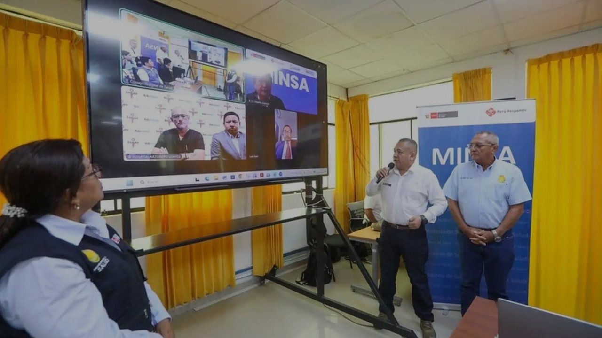
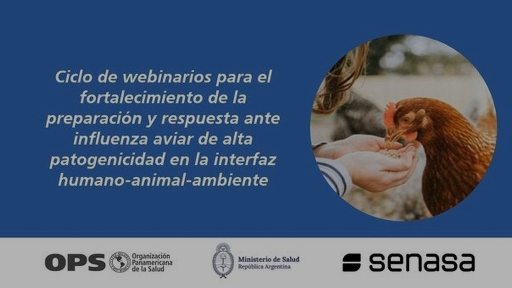

Primero, El agujero de ozono vuelve a crecer. En contexto, el agujero de la capa de ozono vuelve a estar entre los más grandes de casi 50 años. La noticia genera preocupación mundial.





Primero, El agujero de ozono vuelve a crecer. En contexto, el agujero de la capa de ozono vuelve a estar entre los más grandes de casi 50 años. La noticia genera preocupación mundial.
También, Asalto armado en la Costa Verde. En contexto, delincuentes armados interceptaron y balearon una camioneta en la Costa Verde, a la altura de La Perla. La Policía halló dentro del automóvil una pistola reportada como robada.
También, Más lluvias en el norte durante el verano. En contexto, el Senamhi advierte que las lluvias en el norte del país aumentarán su frecuencia durante el verano.
Primero, Especialistas de Lima apoyarán la atención del dengue en Tumbes. En contexto, especialistas del hospital Loayza, de Lima, respaldarán la atención de casos de dengue en Tumbes.
También, Impulsan centros para prevenir y detectar el cáncer. En contexto, pronis impulsa centros especializados para fortalecer la prevención y detección del cáncer.
También, Advierten oleajes de hasta triple altura habitual. En contexto, la Marina advierte que los oleajes anómalos podrían triplicar la altura habitual de las olas.
Primero, IA y supercomputadoras simulan la Vía Láctea. En contexto, la inteligencia artificial ayudó a tres supercomputadoras a simular la Vía Láctea con un nivel de detalle nunca antes visto.
También, Descartan sarampión en un niño de Catawba. En contexto, una prueba especializada descartó el sarampión en un niño del condado de Catawba.
También, IA mejora el control de un implante cerebral para la visión. En contexto, la inteligencia artificial mejora el control de un implante cerebral experimental destinado a la visión.
Cada edición dura menos de dos minutos. En la web tienes el resumen de cada historia y el enlace directo al medio original para leerla completa.
Conoce Olfatecho →